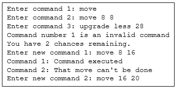

Programming Tasks |
The following questions are provided in PDF format here.
An Electronic Answer Document (EAD) is provided for all questions/tasks. Save this file to an accessible location before you start.
An Electronic Answer Document (EAD) is provided for all questions/tasks. Save this file to an accessible location before you start.
| The following questions require you to open the skeleton program and make modifications to it. |
|---|
Jump to:
Task 1 | Task 2 | Task 3 | Task 4 | Task 5 | Task 6 | Task 7 |
Task 8 | Task 9 | Task 10 | Task 11 | Task 12 | Task 13 | Task 14 | Task 15
Task 1 (max. 2 marks)
This question refers to the PlayGame subroutine in the main program.The commands input by the player are already converted to lower case, which makes them case-insensitive. However, sometimes a player may additionally or accidentally type a space at the beginning or end of their command – currently this often causes an invalid command. Change the same line of code that converts them to lower case to also remove any leading or trailing spaces; feel free to use your own subroutine for this, or a built-in subroutine.
Test that the change you have made works:
- Choose menu option 1 to run the default game and then enter the following commands (they are in quotes as the spaces are important to type):
- "move 8 16 "
- "move 8 16"
- " upgrade pbds 16 "
- Show a screen copy of entering the commands and the response from the computer up to the point at which it prints out the Player One current state line.
| Evidence that you need to provide: |
|---|
|
Task 2 (max. 3 marks)
This question refers to the SetUpDefaultGame subroutine in the main program.At the moment, the game sets the default names of the players to ‘Player One’ and ‘Player Two’ in the SetUpDefaultGame subroutine. Change this subroutine to prompt for the two names of the players and then use the values entered to construct the players.
Test that the changes you have made work:
- Choose menu option 1 to run the default game and then enter “Tom” as the name for Player One and ‘Vicky’ as the name for Player Two.
- Show a screen copy of entering the commands and the responses from the computer up to and including the prompt for the first player to enter their commands.
| Evidence that you need to provide: |
|---|
|
Task 3 (max. 4 marks)
This question refers to the PlayGame and SetUpDefaultGame subroutines in the main program, to the Player class and to the DestroyPiecesAndCountVPs method in the HexGrid class.Normally when a piece is destroyed it depletes your supply chain and moves you one step closer to losing the game as the number of pieces that you can make is limited. This rule has been changed so that if a piece is destroyed then you gain one piece in your supply chain.
- Add a method to the Player class that will allow the PiecesInSupply protected attribute to be modified.
- Modify the DestroyPiecesAndCountVPs method to take Player1 and Player2 as parameters and pass them in from PlayGame in both places that it is called.
- Further modify the DestroyPiecesAndCountVPs method so that it calls the AddPiecesInSupply method that you created for the appropriate player to give them an additional piece in their supply every time one of their pieces is destroyed.
- Modify the SetUpDefaultGame subroutine so that the existing four AddPiece commands are replaced with the following six:
Grid.AddPiece(True, "Baron", 0) Grid.AddPiece(True, "Serf", 7) Grid.AddPiece(True, "Serf", 13) Grid.AddPiece(False, "Baron", 31) Grid.AddPiece(False, "Serf", 15) Grid.AddPiece(False, "Serf", 23)
- Choose menu option 1 to run the default game and then enter the following commands:
- move 13 10
- move 10 14
- move 14 19
- Show a screen copy of entering the commands and the responses from the computer up to and including the prompt for the second player to enter their commands.
| Evidence that you need to provide: |
|---|
|
Task 4 (max. 4 marks)
This question refers to the SetUpDefaultGame subroutine in the main program and to the ExecuteSpawnCommand method in the HexGrid class.Change the rules of the game so that each player can have a maximum of six pieces in play at any given time. There should be an additional output message generated saying that the ‘Spawn attempted to exceed max pieces.’
- Modify the private method ExecuteSpawnCommand of the HexGrid class.
- Modify the SetUpDefaultGame subroutine so that the existing four AddPiece commands are replaced with the following eight:
Grid.AddPiece(True, "Baron", 0) Grid.AddPiece(True, "Serf", 8) Grid.AddPiece(True, "Serf", 24) Grid.AddPiece(True, "Serf", 5) Grid.AddPiece(True, "Serf", 2) Grid.AddPiece(True, "Serf", 3) Grid.AddPiece(False, "Baron", 31) Grid.AddPiece(False, "Serf", 23)
- Choose menu option 1 to run the default game and then enter the following commands:
- spawn 4
- move 4 9
- move 9 17
- Show a screen copy of entering the commands and the responses from the computer up to the point at which it prints out the Player One current state line.
| Evidence that you need to provide: |
|---|
|
Task 5 (max. 9 marks)
This question refers to the PlayGame subroutine in the main program, and to a new method GetGridAsIndices in the HexGrid class.Add an additional command to the game which will print out the hex grid and show the index for each hex; these should be in the top half of each hex and the board should be the same size as the normal display. The new command, “hexes” should not count as one of the three commands that you enter and the results should be displayed immediately upon entry, i.e. the grid should be printed out with the numbers displayed as soon as Enter is pressed. The player should be able to enter hexes for any one of their commands and still have three normal commands.
- Create a new method for the HexGrid class called GetGridAsIndices which will return a string containing the grid with all of the index numbers in the correct places; this could be based on the current GetGridAsString method. You may wish to duplicate and then modify the CreateOddLine and CreateEvenLine methods.
- Modify the PlayGame subroutine to implement a call to the new method whenever a player enters the command “hexes” and then request the normal command.
- Choose menu option 1 to run the default game and then enter the following commands:
- move 8 16
- hexes
- move 16 24
- hexes
- hexes
- upgrade pbds 24
- Show a screen copy of entering the commands and the responses from the computer up to and including the prompt for the second player to enter their commands, including the printout of the hex grid with the numbers and the printout of the board after Player One has completed their move.
| Evidence that you need to provide: |
|---|
|
Task 6 (max. 4 marks)
This question refers to the PlayGame and SetUpDefaultGame subroutines in the main program.Change the move command so that if you move the same piece three times in a row, you get a reduction in cost of 1 fuel (in total). For example, if you moved a Serf to a field (from a field), then to a peat bog and then to a field, it would only cost 4 fuel instead of 5. If you moved a Baron three squares, it would only cost 2 fuel instead of 3. They should be able to do the triple move even if it causes their fuel to end up on 0.
- Modify the PlayGame subroutine to check whether three valid move commands have been executed by the player and refund them one fuel.
- Modify the SetUpDefaultGame subroutine so that Player One only starts with 2 fuel:
Player1 = Player("Player One", 0, 2, 10, 5)
- Choose menu option 1 to run the default game and then enter the following commands:
- move 0 4
- move 4 9
- move 9 17
- Show a screen copy of entering the commands and the responses from the computer up to the point at which it prints out the Player One current state line.
| Evidence that you need to provide: |
|---|
|
Task 7 (max. 7 marks)
This question refers to the PlayGame subroutine in the main program and to the ExecuteCommandInTile method and a new method, MakeField, in the HexGrid class.Change the saw and dig commands so that if you saw or dig the same location three times in a row in the same turn then you get 5 of that resource and the terrain reverts to a field. Remove the random chance of getting 5 fuel when you dig so that you always get only 1.
- Modify the ExecuteCommandInTile to remove the possibility of a dig command generating a field.
- Modify the Dig method of the PBDSPiece class to remove the possibility of a dig command generating 5 fuel.
- Add a method to the HexGrid class called MakeField which has one parameter, the index of the tile which is to be made into a field.
- Modify the PlayGame subroutine to check whether three dig or saw commands have been executed in a single turn by either player and give them the extra resources and turn the tile into a field by calling the newly added MakeField method in the HexGrid class.
- Choose menu option 1 to run the default game and then enter the following commands:
Player One - move 8 16
- move 16 24
- upgrade pbds 24
Player Two - move 23 27
- move 27 30
- upgrade less 30
Player One - dig 24
- dig 24
- dig 24
Player Two - saw 30
- saw 30
- saw 30
- Show a screen copy of the final board after all of the commands have been executed and include the Player One and Player Two current states that are shown immediately before the final board print.
| Evidence that you need to provide: |
|---|
|
Task 8 (max. 7 marks)
This question refers to the CheckCommandIsValid and SetUpDefaultGame subroutines in the main program, the creation of a new subroutine, CheckDowngradeCommandFormat and to a new method, ExecuteDowngradeCommand – as well as the ExecuteCommand method in the HexGrid class.Introduce a new downgrade command so that a PDBS or LESS can be downgraded to a Serf for a cost of 1 lumber. The syntax for the command is “downgrade NUM” where NUM is the location of the piece to be downgraded.
- Modify the CheckCommandIsValid subroutine to allow for and check the format of the new downgrade command.
- Create a new subroutine CheckDowngradeCommandFormat which is called by the modified CheckCommandIsValid subroutine.
- Modify the ExecuteCommand method of HexGrid to call a new private method ExecuteDowngradeCommand.
- Create a new private method in HexGrid called ExecuteDowngradeCommand.
- Modify the SetUpDefaultGame subroutine so that Player1 Serf piece starts at location 16:
Grid.AddPiece(True, "Serf", 16)
- Choose menu option 1 to run the default game and then enter the following commands:
- move 16 24
- upgrade pbds 24
- downgrade 24
- Show a screen copy of entering the commands and the responses from the computer up to the point after it prints out the updated board.
| Evidence that you need to provide: |
|---|
|
Task 9 (max. 3 marks)
This question refers to the SetUpDefaultGame subroutine in the main program and to the BaronPiece class.Change the rules for the Baron so that it needs three connections to kill it.
- Modify the BaronPiece class to make it so that it can only be destroyed by three connections.
- Modify the SetUpDefaultGame subroutine so that the four starting pieces are replaced with the following seven:
Grid.AddPiece(True, "Baron", 0) Grid.AddPiece(True, "Serf", 15) Grid.AddPiece(True, "Serf", 27) Grid.AddPiece(True, "Serf", 25) Grid.AddPiece(False, "Baron", 19) Grid.AddPiece(False, "Serf", 8) Grid.AddPiece(False, "Serf", 2)
- Choose menu option 1 to run the default game and then enter the following commands:
Player One - move 25 21
- move 21 18
- move 18 14
Player Two - move 2 5
- move 5 1
- move 1 4
- Show a screen copy of entering the commands for the entire game.
| Evidence that you need to provide: |
|---|
|
Task 10 (max. 4 marks)
This question refers to the CheckCommandIsValid subroutine in the main program and to the ExecuteCommand method and a new ExecuteSalvageCommand method in the HexGrid class.Develop the salvage command. Any of your own Serf, PBDS or LESS pieces can be salvaged. Salvaging a piece will add 1 to your supply chain, give you 5 lumber and remove the piece from the board. The format of the command is salvage NUM, where NUM is the location on the board of the piece to salvage.
- Modify the CheckCommandIsValid subroutine to allow for and check the format of the new salvage command.
- Modify the ExecuteCommand method of HexGrid to call a new private method ExecuteSalvageCommand.
- Create a new private method in HexGrid called ExecuteSalvageCommand.
- Choose menu option 1 to run the default game and then enter the following commands:
- salvage 31
- salvage 4
- salvage 8
- Show a screen copy of entering the commands and the response from the computer up to the point at which it prints out the updated board.
| Evidence that you need to provide: |
|---|
|
Task 11 (max. 10 marks)
This question refers to the PlayGame subroutine in the main program and to the Player class.Introduce three chances for each player so that if they enter an invalid move or a move that could not be executed for some reason, they can correct it, but only three times per game. The system should prompt them to re-enter the invalid move and deduct 1 from their chances. The remaining chances should be printed out each time a player uses up a chance and at the start of each player’s turn.
Also, as the commands and replacements could now be confusing, make sure that each time a player is asked for a command or a replacement command they are told which command number they are entering/re-entering.
- Modify the Player class to create an attribute called Chances for their three chances.
- Modify the PlayGame subroutine so that it allows the player to enter a replacement command if their command is invalid or could not be executed for some reason.
- Create three new methods for the Player class to control access to the Chances attribute: DeductChance, GetChances and ResetChances.
- By way of example and clarity, the testing output for the first turn of Player One should start as follows:

- Choose menu option 1 to run the default game and then enter the following input, waiting for a prompt between each entry:
- move
- move 8 8
- upgrade less 28
- move 8 16
- move 16 20
- move 20 28
- Enter (for Player Two’s turn)
- move 27 30
- upgrade less 30
- Enter (for Player One’s turn)
- upgrade less 28
- saw 28
- saw 29
- Enter (for Player Two’s turn)
- Show a screen copy of entering the commands and all the responses from the computer.
| Player One |
|
| Player Two |
|
| Player One |
|
| Evidence that you need to provide: |
|---|
|
Task 12 (max. 13 marks)
This question refers to the CheckCommandIsValid and SetUpDefaultGame subroutines and a new CheckSpawnCommandFormat subroutine in the main program, to a new BombPiece class, to the Piece class and to the ExecuteSpawnCommand, DestroyPiecesAndCountVPs, GetPieceTypeInTile and ExecuteMoveCommand methods in the HexGrid class.Develop a Bomb piece. The bomb can only be spawned by the Baron but should look like a Serf piece. It costs 10 lumber to spawn and 2 fuel for each space that it moves regardless of the terrain.
When the bomb explodes it will destroy all pieces in the hexes adjacent to the hex containing the bomb. It will explode if two pieces are adjacent to it (as per normal attacks), but the bomb has a further ability.
Once the bomb has moved five spaces it is immobilised and becomes ‘primed’: any piece newly entering (even in the middle of a move) one of the hexes surrounding the bomb will cause it to explode. The bomb will not explode if it is primed next to an existing piece (but of course it will if primed next to two existing pieces), only if another piece enters a hex next to it, kind of like a motion detector.
The command is a modification of the spawn command, so now spawn can optionally take a second argument of bomb, e.g. spawn bomb NUM would spawn a bomb at NUM if NUM is adjacent to the Baron, and spawn NUM would operate as normal. The bomb has a VP value of 5, meaning that when it explodes, the opposing player receives 5 VPs.
- Modify the CheckCommandIsValid subroutine to make the new spawn command function correctly.
- Create a new subroutine called CheckSpawnCommandFormat that is called from the modified CheckCommandIsValid to make sure that the new spawn bomb command is valid.
- Modify the private method ExecuteSpawnCommand so that it will spawn a bomb and charge the player 10 lumber or report an error if they don’t have enough lumber.
- Create a new BombPiece class for the bomb.
- Modify the method DestroyPiecesAndCountVPs so that if a bomb is destroyed then it explodes and destroys the surrounding pieces too.
- Modify the method GetPieceTypeInTile for HexGrid so that the bomb piece appears as a Serf when the board is displayed.
- Modify the private method ExecuteMoveCommand so that it checks whether the player moved next to a primed bomb, and explodes the bomb if it did.
- Modify the Piece class to add an Explode method so that it can be destroyed at the end of the turn in case a bomb was set off during the turn.
- Modify the SetUpDefaultGame subroutine so that both players start with 30 of each resource:
Player1 = Player("Player One", 0, 30, 30, 5) Player2 = Player("Player Two", 1, 30, 30, 5)
- Choose menu option 1 to run the default game and then enter the following commands:
Player One - spawn bomb 4
- move 4 9
- move 9 13
Player Two - move 23 19
- move 19 11
- move 11 14
Player One - move 13 18
- move 18 22
- move 22 27
Player One - move 31 23
- move 14 18
- move 18 22
- Show a screen copy of entering the commands and the responses from the computer up to the point at which it prints out that Player One is the winner.
- Choose menu option 1 to run the default game and then enter the following commands:
Player One - spawn bomb 4
- move 4 9
- move 9 13
Player Two - move 23 19
- upgrade less 19
- saw 19
Player One - move 13 18
- move 18 22
- move 22 27
Player Two - saw 19
- saw 19
- saw 19
- Show a screen copy of entering the commands and the responses from the computer up to the point at which it prints out that Player One is the winner.
| Evidence that you need to provide: |
|---|
|
Task 13 (max. 10 marks)
This question refers to the PlayGame, CheckUpgradeCommandFormat and SetUpDefaultGame subroutines in the main program, to the new WizardPiece class and to the ExecuteUpgradeCommand and new ResetWizards methods in the HexGrid class.Introduce a new piece, a Wizard which can teleport a distance of three spaces but only once per turn; this costs 5 fuel. It can also move one square for a cost of 1 fuel. The piece can be created by upgrading a Serf using the new command upgrade wiz NUM, where NUM is the location of a hex containing a Serf. To move the wizard, you simply use the move command as normal and if the distance is two or three squares then it teleports, if it is one square then it moves normally and if it is more than three squares then it is an invalid move. The wizard should be displayed with W for Player One and w for Player Two and should have a VP value of 3.
- Create a new WizardPiece class.
- Modify the CheckUpgradeCommandFormat subroutine to allow for the new wiz upgrade command.
- Modify the method ExecuteUpgradeCommand to create the new wizard piece if spawned.
- Add a new method to the HexGrid class called ResetWizards to reset the teleport commands at the end of each turn.
- Modify the PlayGame subroutine to call the new ResetWizards method (only show the lines either side and the new line).
- Modify the SetUpDefaultGame subroutine so that Player One starts with 20 fuel:
Player1 = Player("Player One", 0, 20, 10, 5)
- Choose menu option 1 to run the default game and then enter the following commands:
Player One - upgrade wiz 8
- move 8 13
- move 13 18
Player Two - move 23 19
- move 19 11
- upgrade less 11
Player One - move 18 8
- move 18 13
- move 13 8
- Show a screen copy of entering the commands and the responses from the computer up to the point at which it prints out the Player One current state line.
| Evidence that you need to provide: |
|---|
|
Task 14 (max. 10 marks)
This question refers to the PlayGame, CheckCommandIsValid, CheckUpgradeCommandFormat and SetUpDefaultGame subroutines in the main program, to the new SCFWPiece class, to the Player class and to the ExecuteUpgradeCommand, ExecuteCommand and new ExecuteSupplyCommand methods in the HexGrid class.Introduce a new piece, a supply chain factory worker, for the same cost of 5 lumber of any upgrade. The syntax for the upgrade is “upgrade scfw NUM” where NUM is the location of the Serf to be upgraded. Once created, the piece is displayed as F for Player1 and f for Player2. A new command will be available “supply NUM”, which will take all three of your moves (so it can only be the first command), will cost 5 lumber and 5 fuel and will add 1 to your supply chain; NUM is the location of the factory. The VP value of the factory is 3. The factory cannot be moved once created.
- Create the new SCFWPiece class.
- Modify the CheckCommandIsValid subroutine to validate the supply command.
- Modify the CheckUpgradeCommandFormat subroutine so that it can validate the new upgrade command.
- Modify the private method ExecuteUpgradeCommand of the HexGrid class to allow the new SCFWPiece to be created.
- Modify the method ExecuteCommand of the HexGrid class to allow for the supply command to work by calling a new private method, ExecuteSupplyCommand.
- Create the new private method ExecuteSupplyCommand in the HexGrid class to implement the new supply command.
- Modify the PlayGame subroutine to only allow the supply command to be the first command of the three and terminate input for the other two commands if received as the first command. Also modify it to call the AddPieceToSupplyChain method.
- Create a new AddPieceToSupplyChain method in the Player class that will add 1 piece to the supply chain.
- Modify the SetUpDefaultGame subroutine so that Player1 starts with 30 of both resources:
Player1 = Player("Player One", 0, 30, 30, 5)
- Choose menu option 1 to run the default game and then enter the following commands:
Player One - move 8 16
- upgrade scfw 16
- supply 16
Player Two - move 23 19
- move 19 11
- upgrade less 11
Player One - supply 16
- Show a screen copy of entering the commands and all the responses from the computer.
| Evidence that you need to provide: |
|---|
|
Task 15 (max. 10 marks)
This question refers to the DisplayMainMenu, LoadGame and new CreateGame subroutines in the main program. The question also relies on using the GetGridAsIndices method from task 5, including any methods called by that method. Therefore it is best to begin your solution with the codebase that you ended task 5 with.Introduce a new command to the main menu that will allow a custom game to be created. The user should be able to enter the grid size as a choice of 6, 8 (the current size) or 10 (and the board will be displayed for them to check – this is just a reuse of the code from task 5 and hence the final code from task 5 will be the starting point for this task), the location of a Baron for each player as well as the location of any additional pieces that they wish to add. They should be able to define which hexes contain lumber and peat bogs and define the starting resources (including supply chain) for each player. There is no need to perform any validation on the data entry except for the grid size (which must be 6, 8 or 10).
The prompts that should be given in this new subroutine (in order) are:
- "Please enter the grid size (6, 8 or 10): "
- "Please enter all the locations of peat bogs separated by commands with no spaces: "
- "Please enter all the locations of forests separated by commands with no spaces:
- "Please enter the location of the Baron for Player 1: "
- "Please enter the location of the Baron for Player 2:
- "Please enter the starting amount of fuel for Player 1: "
- "Please enter the starting amount of fuel for Player 2: "
- "Please enter the starting amount of lumber for Player 1: "
- "Please enter the starting amount of lumber for Player 2: "
- "Please enter the starting amount of pieces for Player 1: "
- "Please enter the starting amount of pieces for Player 2: "
- "Please enter the starting amount of VPs for Player 1: "
- "Please enter the starting amount of VPs for Player 2:
- "Enter piece to add for Player One (S=Serf, L=LESS, P=PBDS) or D for Done: "
- "Enter piece to add for Player Two (S=Serf, L=LESS, P=PBDS) or D for Done: "
- "What name would you like to save the file as (please include the extension): "
- "Would you like to play the game that you've created and saved?
- "Enter the index of the hex where that piece should be placed: "
The game should automatically save in a file (it should prompt for the name) and then, once saved, the players should have the opportunity to play it immediately if they wish without having to type in the file name. For reference, see the game1.txt file supplied with the pre-release code; the format of the file is as follows (it is all comma-separated values):
Line 1: text for Player One’s name, Player One’s VPs, Player One’s fuel, Player One’s lumber, Player One’s supply chain
Line 2: text for Player Two’s name, Player Two’s VPs, Player Two’s fuel, Player Two’s lumber, Player Two’s supply chain
Line 3: board size
Line 4: terrain list all separated by commas in index order
Line 5+: one line for each piece on the board with the format: 1 or 2 to indicate the player number, piece name (case sensitive), index (board location)
- Modify the DisplayMainMenu subroutine to add option 3. Create game.
- Modify the Main subroutine so that it calls a new subroutine CreateGame and then asks the player if they would like to load the game and then loads the game. You will also need to modify the call LoadGame so that it accepts the file name as a parameter.
- Create a new subroutine called CreateGame which will create the file containing the game save and return two values, Success (as a Boolean) and FileName (the text name of the file created).
- Modify the LoadGame subroutine to correct the bug as described above.
- Choose menu option 3 to create a game and then enter the following data at each consecutive prompt:
- 8
- 24,25,6,7
- 4,5,26,27
- 0
- 31
- 12
- 12
- 15
- 15
- 5
- 5
- 0
- 0
- S
- 12
- D
- S
- 19
- D
- test.csv
- y
- Show a screen copy of entering the commands and the responses from the computer up to the point at which it prints out the Player One current state line.
| Evidence that you need to provide: |
|---|
|
Extension Tasks
Completed all the tasks above and want to explore the program futher? Have a go at some of these additional challenges!
- Introduce a GOD mode in which resources are infinite for both sides and nobody can die, once exited (using the command "godmode on" or "godmode off") then the game reverts to normal rules and the resources revert to their values before godmode was enabled.
- Create a computer controlled player
- Make the game more user-friendly so that each time any commands are processed a full description is give, e.g. 5 lumber deducted for upgrading PBDS in hex 12, or Serf has two connections from hexes 12 & 17 and was destroyed in hex 20.
- Introduce a new level of upgrade so that pbds and less pieces can be upgraded to super pbds and less pieces for a cost of 10 lumber but will now generate 2 resources for each dig or saw command.
- Introduce a new rule so that connections from your own pieces don’t kill you.
- Introduce an assassin piece that can use a kill command once per game but then it reverts to a serf, the kill command will kill the baron if it is next to it.
- Introduce a poison piece command so that each player can poison one piece per game, if a poisoned piece is killed the victim gains VPs instead of the killer.
- Introduce a random game command from the main menu where the board is randomly sized and resources are randomised (but fairly with suitable rules for distribution).
- Introduce a new blocking/wall piece that requires three connections to kill it (or possibly is also invincible for three turns).
- Change the rules so that the connection check for killing a piece is made after every move, instead of at the end of the turn.
- Add the ability to modify the terrain (for a cost), or have a new piece with this ability.
- Introduce ranged units that have connections only two edges away (instead of one).
- Introduce a mini serf (or pleb) piece that only costs 1 but cannot be upgraded and will be automatically killed if it ends the turn next to an enemy. It also doesn’t cost you a piece from the supply chain to spawn.
- Have an advanced game mode whereby there is one trap square randomly on the board and any piece landing in it will be destroyed. Alternatively, give each player the opportunity to plant one trap on any field not adjacent to the opponent’s Baron, once per game.
- Change the rules so that you can choose to have an immovable Baron but in return get 1 extra lumber and 1 extra fuel every turn.
- Introduce a game timer so that each player has 180 seconds (or any configurable value using a constant or inputted variable) to enter their moves. Failure to complete the move in time will result in the player forfeiting the remainder of their moves; whatever they have entered so far will be executed (if possible), after which it will become the other player’s turn.
- Add hit points for pieces to change the mechanic of when/how pieces are killed.
- Change the game so that the coordinates system is removed and distances are simply counted by the number of hexes that you need to move through. The IDs should remain. The challenge here is working out / maintaining which tiles are neighbours.
- Change the game rules so that the game is terminated immediately if a Baron piece is destroyed. At the moment if Player 1 destroys Player 2’s Baron, they still get to play their turn.
- Change the victory rules at the end of the game so that once the game ends, each player gains VP for all of their remaining pieces according to the VP value for those pieces.